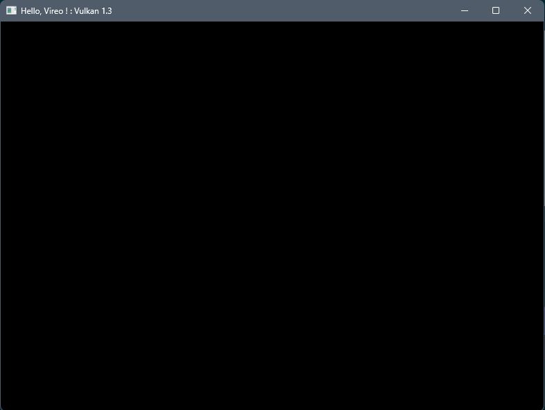

Introduction
This tutorial will teach you the basics of using the Vireo Rendering Hardware Interface. Vireo is an open source library written in modern C++ that implements a common abstraction layer over multiple 3D graphics APIs.
Like modern graphics API, Vireo is a low-level library but is designed to be less verbose, at the price of reduced flexibility.
This tutorial assumes that the reader already knows the basic concepts of the modern graphics API like Vulkan or DirectX 12, like pipelines, descriptors, resources, buffers, barriers, ...
Development environment
Since Vireo currently only supports Microsoft Windows this tutorial assumes that you use this operating system.
We will be using CMake which means that you can use Microsoft Visual Studio or Jetbrains CLion to edit and compile your code. Note that you need to install the CMake component for Visual Studio.
Since Vireo implements a DirectX 12 backend under Windows you need to install Microsoft Visual C++ 2022 (MSCV 19+). Vireo can be compiled with LLVM but only with the Vulkan back-end alone.
For DirectX 12 install the "Game Development with C++" component for Visual Studio.
For Vulkan install the Vulkan SDK
The CMake scripts will automatically install the GLM library used in this tutorial
Finally, clone the Vireo RHI repository somewhere in your computer.
Setting up the project
Clone the Vireo template project somewhere in your computer then adds a .env.cmake file containing the following variable at the root of your project:
set(VIREO_PROJECT_DIR "path_to_the_cloned_vireo_directory")
In the src directory creates :
A new MyApp.ixx interface file for your application :
module;
#include "Libraries.h"
export module myapp;
import app;
export class MyApp : public Application {
public:
void onInit() override;
void onRender() override;
void onResize() override;
void onDestroy() override;
}
A new MyApp.cpp implementation file :
module;
#include "Libraries.h"
module myapp;
void MyApp::onInit() {
}
void MyApp::onRender() {
}
void MyApp::onResize() {
}
void MyApp::onDestroy() {
}
And a new MyAppMain.cpp source file :
#include "Macros.h" import myapp; APP(std::make_shared<MyApp>(), L"Hello, Vireo !", 1280, 720);
Update the CMakeLists.txt file by uncommenting the last part :
...
#######################################################
set(MY_TARGET_SRC
${SRC_DIR}/MyApp.cpp
${SRC_DIR}/MyAppMain.cpp)
set(MY_TARGET_MODULES ${SRC_DIR}/MyApp.ixx)
build_target(myapp "${MY_TARGET_SRC}" ${MY_TARGET_MODULES})
Then reload the CMake project and build the myapp target.
Execute the application (from the project root directory), it will display the graphic API selection dialog :

Select an API and an empty window will be displayed :
The Vireo class
The Vireo class encapsulate the creation of the various objects needed by the graphics API such as the physical adapter and the logical device. The instance of the Vireo class is stored in the vireo field of the base Application class of your project. The creation of the instance is done in the os-specific main class (Win32Application for Windows) of your project after the user selects the runtime backend :
The Vireo class is the main class of the library; You need an instance of this class to create all the library objects.
The submission queue
Most operations performed with graphics API, like draw commands and memory operations, are asynchronously executed by submitting them to a SubmitQueue. Queues are allocated from command types, where each type supports a specific set of operations in its queues. For example, there could be separate queue families for graphics, compute and memory transfer operations.
Add a submission queue field to your application :
...
private:
std::shared_ptr<vireo::SubmitQueue> graphicQueue;
};
This queue will be used for all graphics commands and for presenting the result in the window.
Create it in the onInit() method :
void MyApp::onInit() {
graphicQueue = vireo->createSubmitQueue(vireo::CommandType::GRAPHIC);
}
and in the onDestroy() method add the code to wait for all the submitted commands to finish before closing the application :
void MyApp::onDestroy() {
graphicQueue->waitIdle();
}
The swap chain
The swap chain is a collection of frame buffers. Its basic purpose is to ensure that the image that we're currently rendering to is different from the one that is currently on the screen. This is important to make sure that only complete images are shown. Every time we want to draw a frame we have to ask the swap chain to provide us with an image to render to. When we've finished drawing a frame, the image is returned to the swap chain for it to be presented to the screen at some point.
We need a synchronization mechanism when we use a swap chain since the modern graphics API executes commands asynchronously: we have to wait for the GPU to finish the submitted work before reusing a frame buffer.
The CPU/GPU synchronization is done with a Fence object. Since we can have multiple frames in flight (the GPU can render in multiple frame buffers in parallel), we need one Fence per frame buffer.
Add a FrameData struct and a vector of FrameData to your application:
static constexpr auto FRAMES_IN_FLIGHT{2};
struct FrameData {
std::shared_ptr<vireo::Fence> inFlightFence;
};
std::vector<FrameData> framesData{FRAMES_IN_FLIGHT};
Create the fences after the queue creation :
for (auto& frameData : framesData) {
frameData.inFlightFence = vireo->createFence();
}
It's time to create the swap chain. Add a SwapChain field :
std::shared_ptr<vireo::SwapChain> swapChain;
We need the window handle to create the swap chain. The window is created by the Win32Application and the os-specific handle is stored in the windowHandle field of the base Application class. We can use this field to create the swap chain, just after the graphicQueue creation:
swapChain = vireo->createSwapChain(
vireo::ImageFormat::R8G8B8A8_SRGB,
graphicQueue,
windowHandle,
vireo::PresentMode::VSYNC,
FRAMES_IN_FLIGHT);
The swap chain needs to be recreated each time the window is resized :
void MyApp::onResize() {
swapChain->recreate();
}
We have to wait for the last frame presentation to be finished before closing the application :
void MyApp::onDestroy() {
graphicQueue->waitIdle();
swapChain->waitIdle();
}
Get the frame data corresponding to the current frame in the onRender() method, acquire the next frame buffer (while waiting for the frame buffer to be ready), then present it into the window :
void MyApp::onRender() {
const auto& frameData = framesData[swapChain->getCurrentFrameIndex()];
if (!swapChain->acquire(frameData.inFlightFence)) { return; }
// commands will be recorded and submitted here
swapChain->present();
swapChain->nextFrameIndex();
}
Commands allocators and command lists
We can't execute the application now because the swap chain image needs to be ready to be presented by the GPU before calling present(). To make this frame buffer ready to be presented, we have to use a pipeline barrier to synchronize resource like image between the different stages of a GPU pipeline.
A pipeline barrier is a GPU synchronization primitive that guarantees that any writes performed by those earlier stages are made visible (and available) to reads or writes in the later stages.
A pipeline barrier is created on the GPU with the help of a CommandList and a command list is allocated by a CommandAllocator.
The command list will also be used to record pipeline and drawing commands for execution by the GPU.
Since we can render multiple frames in flight, we need one allocator and one list per frame:
...
struct FrameData {
std::shared_ptr<vireo::Fence> inFlightFence;
std::shared_ptr<vireo::CommandAllocator> commandAllocator;
std::shared_ptr<vireo::CommandList> commandList;
};
...
Add the creation code after the fence creation :
...
for (auto& frameData : framesData) {
frameData.inFlightFence = vireo->createFence();
frameData.commandAllocator = vireo->createCommandAllocator(vireo::CommandType::GRAPHIC);
frameData.commandList = frameData.commandAllocator->createCommandList();
}
Command lists need to be :
- Reset before use (via the command allocator in this tutorial)
- Submitted to the GPU with a submission queue
We will do that between acquire() and present():
...
frameData.commandAllocator->reset();
// commands will be recorded and submitted here
graphicQueue->submit(
frameData.inFlightFence,
swapChain,
{frameData.commandList});
...
Recording commands in the command list is done in a recording session. A session starts with begin() and ends with end(), between reset() and submit() :
... frameData.commandList->begin(); // commands will be recorded and submitted here frameData.commandList->end(); ...
We can finally add the pipeline barriers for the current swap chain frame buffer between begin() and end():
frameData.commandList->barrier(
swapChain,
vireo::ResourceState::UNDEFINED,
vireo::ResourceState::RENDER_TARGET_COLOR);
// commands will be recorded and submitted here
frameData.commandList->barrier(
swapChain,
vireo::ResourceState::RENDER_TARGET_COLOR,
vireo::ResourceState::PRESENT);
The application can be started to display a black window (since we never write data into the frame buffer): 
Render pass
A render pass consists of a list of commands submitted to the GPU to draw into various frame buffers also named attachments. In this tutorial we will directly draw into the swap chain frame buffers.
To configure the attachments and the render pass we have to create a RenderingConfiguration. Add a configuration object to your application class:
...
vireo::RenderingConfiguration renderingConfig {
.colorRenderTargets = {{
.clearColorValue = {0.0f, 0.2f, 0.4f, 1.0f}
}}
};
...
We declare in this object one frame buffer as a color attachment. The only parameter for this attachment is the RGBA color used to clear the frame buffer before drawing (we need it to be different from the default black color to visually control that the frame buffer clearing is effective).
Since we will render directly into the swap chain we need to set the color attachment target just after the swap chain creation with createSwapChain():
... renderingConfig.colorRenderTargets[0].swapChain = swapChain; ...
In the onRender() method we can start the render pass between the swap chain barriers:
... frameData.commandList->beginRendering(renderingConfig); // commands will be recorded and submitted here frameData.commandList->endRendering(); ...
After the white then the black window we now have a blue window : 
Viewports and scissors
A viewport basically describes the region of the framebuffer that the output will be rendered to. This will almost always be (0, 0) to (width, height).
While viewports define the transformation from the image to the framebuffer, scissor rectangles define in which regions pixels will actually be stored. Any pixels outside the scissor rectangles will be discarded by the rasterizer. They function like a filter rather than a transformation (image is from the Vulkan tutorial):

We need to record the commands to set the viewports & scissors at the start of the render pass :
...
frameData.commandList->beginRendering(renderingConfig);
frameData.commandList->setViewports(1, {swapChain->getExtent()});
frameData.commandList->setScissors(1, {swapChain->getExtent()});
// commands will be recorded and submitted here
...